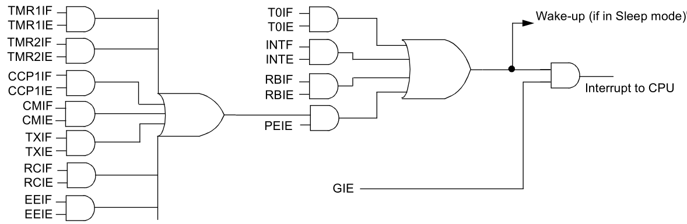
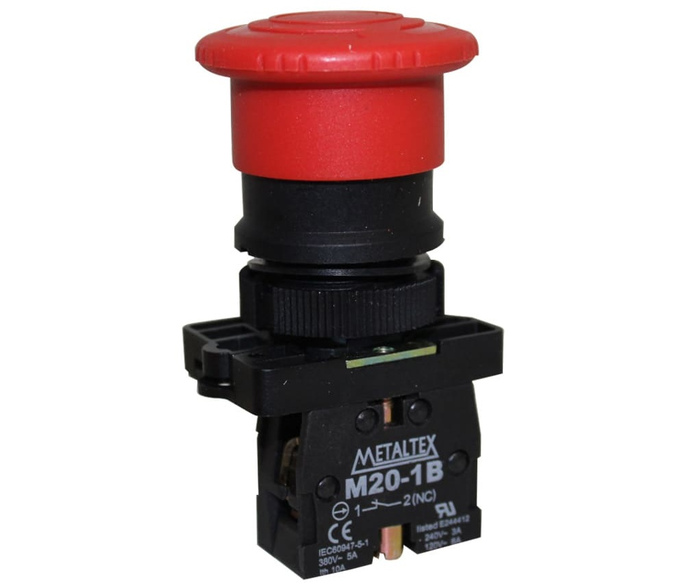
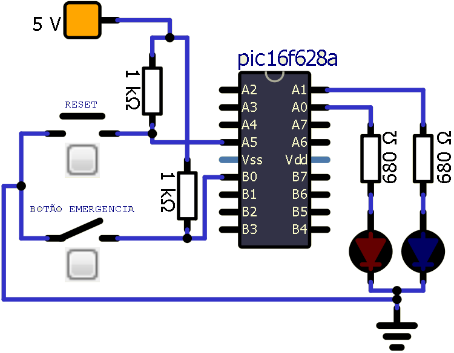
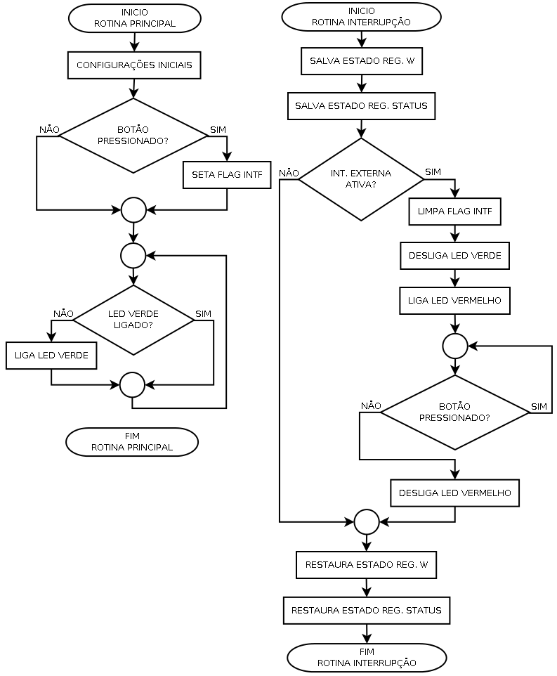

Episódio 12: Conhecendo a interrupção externa em RB0 e a instrução RETFIE no PIC16F628A
Em algumas aplicações onde há a necessidade de tomada de uma ação de forma instantânea, como por exemplo, uma prensa que não pode pressionar a mão do utilizador, no qual existirá um sensor de barreira que enviará um sinal ao microcontrolador dizendo que há um objeto/mão que poderá sofrer danos.
No microcontrolador PIC16F628A existe a interrupção que pode ser usada para este processo, e ela é conhecida por “interrupção externa” associada a pino RB0 do registrador PORTB e para trabalhar com a interrupção externa há a necessidade de configuração de alguns bits de registradores.
O primeiro registrador a ser configurado será o registrador OPTION_REG pois com ele se escolhe o tipo de borda (subida ou descida) que aciona a interrupção.
No registrador OPTION_REG, o bit INTEDG quando setado (valor igual a 1) seleciona a interrupção por borda de subida, enquanto que esse bit estiver limpo (valor igual a 0), seleciona a interrupção por borda de descida.
| Figura 12.1 - Visualização de borda de subida e descida em um sinal |
|---|
| Fonte: Próprio autor (2020) |
Outro registrador a ser configurado é o registrador INTCON em relação aos bits INTE (flag de ativação da interrupção externa), INTF (flag de estado se houve ou não a ocorrência da interrupção externa) e GIE (flag da chave geral de todas as interrupções) são os bits importantes para esta interrupção.
O bit INTE é responsável por ativar se setado (valor igual 1) ou desativar se limpo (valor igual a 0) exclusivamente a interrupção externa, enquanto que o bit GIE é responsável por permitir se setado (valor igual a 1) ou não permitir se limpo (valor igual a 0) todas as interrupções, conforme a Figura 12.2.
Já o bit INTF é responsável por informar se houve ou não a ocorrência da interrupção externa, e isto ocorre, verificando seu valor. Se o bit/flag INTF estiver setado (valor 1), quer dizer que houve a ocorrência da interrupção externa, e caso esteja limpo (valor 0), não houve a ocorrência da interrupção externa.
OBSERVAÇÃO: Os bits terminados em:
E são bits de Enable (ativar/ativação) utilizados para ativar uma certa ação/propriedade no microcontrolador;
F são bits de Flag (bandeira) utilizados para informar se houve ocorrência de alguma ação/propriedade ativada pelo bit terminado com E.
Todo o tratamento de interrupção é feito no endereço 0x04 para o PIC16F628A e é retornado à rotina principal pela instrução RETFIE.
| Figura 12.2 - Bits associados às interrupções no PIC16F628A |
|---|
|  |
| Fonte: MICROCHIP 2020 (b) página 109 |
Vejamos agora um exemplo para exemplificar o uso da interrpção externa no PIC16F628A abordado em sistemas de segurança, conforme Figura 12.3 e Figura 12.4.
| Figura 12.3 - Sistema de segurança com botão de emergência |
|---|
| Fonte: http://www.serralheriasjcampinas.com.br/laudo-tecnico-nr-12/ |
| Figura 12.4 - Botão Cogumelo Vermelho com Trava Metaltex P20AKR-R-1B |
|---|
|  |
| Fonte: https://www.metaltex.com.br/produtos/automacao/comando/p20-botao-de-comando-plastico-22mm |
Na Figura 12.5 pode-se ver o circuito projetado no simulador SimulIDE para uso do botão de emergência com a interrupção externa, no qual iremos fazer uso da interrupção externa na borda de descida (transição do nível alto para baixo).
| Figura 12.5 - Circuito de botão de emergência com int. externa |
|---|
|  |
| Fonte: Próprio autor (2021) |
Na Figura 12.6 está o diagrama do processo do uso da interrupção externa associado a um botão de emergência. Note que nesta figura existem dois inícios de rotinas, sendo elas a principal e a de tratamento de interrupções, onde elas são independentes.
| Figura 12.6 - Diagrama do processo do botão de emergência com int. externa |
|---|
|  |
| Fonte: Próprio autor (2021) |
A rotina principal é executada ao ligar o PIC, e nela são feitas as seguintes ações:
A rotina principal é pequena e a função dela é fazer as configurações iniciais e manter o LED verde aceso enquanto estiver o processamento sobre ela.
A rotina de tratamento das interrupções a baseada nos seguintes passos:
O código associado a Figura 12.5 e Figura 12.6 é o Código 12.1 no qual relaciona os comportamentos de todos os componentes com uso no microcontrolador PIC16F628A.
| Código 12.1 - Código do exemplo de botão de emergência com a int. externa |
|---|
|
| Fonte: Autor 2020 |
No Código 12.1 nas linhas 9 (5) e 10 (6) foram definidas duas variáveis nos endereços de memória de uso geral (0x20 e 0x21), enquanto nas linhas 11 (7) a 13 (9) estão definidas três variáveis associadas aos pinos que relacionam o botão e os dois LEDs.
Nas linhas de 18( 14) a 36 (32) estão as linhas de instrução sobre a rotina de interrupção. A linha 18 (14) é a linha do início da tratativa das interrupções, enquanto que as linhas 19 (15) a 21 (17) estão as instruções para armazenamento dos estados dos registradores W e STATUS. Já na linha 23 (19) está a instrução que avalia se a interrupção que ocorreu é da interrupção externa, e nas linhas 25 (21), 26 (22) e 30 (26) estão, respectivamente, a instrução de limpeza do flag INTF do registrador INTCON (pois no momento já está sendo feita a tratativa dessa interrupção), a instrução para apagar/desligar o LED verde e a instrução para apagar/desligar o LED vermelho. Na linha 27 (23) tem a instrução que acende/liga o LED vermelho.
Na linha 27 (24) tem a instrução para avaliar se o botão de emergência continua pressionado (se ainda está com nível baixo o pino RB0), e caso ainda esteja em nível baixo, o processo continua na linha 29 (25) a qual tem a instrução GOTO $-1, que representa o processo tem que saltar para o endereço atual de execução menos uma unidade, isto é, retorna para a instrução anterior a instrução atual, fazendo que o teste se repita até que o botão não esteja mais pressionado e com isso saia do processo de repetição (loop).
Por último, na rotina de interrupções, há a tratativa de restauração dos registradores W e STATUS, que estão nas linhas 32 (28) a 36 (32).
Agora na rotina principal, que está nas linhas 38 (34) a 67 (63), tem-se as seleções de bancos de memória nas linhas 39 (35) e 40 (36) (seleção do banco de memória 1) e linhas 53 (49) e 54 (50) (seleção do banco de memória 0).
Neste exemplo de aplicação da interrupção externa, as linhas de maior relevância são as linhas 59 (55) e 60 (56) onde se tem a ativação da chave geral das interrupções (bit GIE - 8º bit do registrador INTCON) como também o bit de ativação da interrupção externa (bit INTE - 5º bit do registrador INTCON).
Nas linhas de 42 (38) a 57 (53), estão linhas padrões estudadas em episódios anteriores, no qual daremos ênfase nas linhas 63 (59) a 65 (61), responsáveis pelo controle sobre o LED verde.
Na linha 63 (59) tem-se a instrução de teste se o LED verde está aceso/ligado, se estiver, salta a instrução da linha 64 (60) que é a instrução para acender/ligar o LED verde. Já na linha 65 (61) tem a instrução para levar ao início do processo novamente.